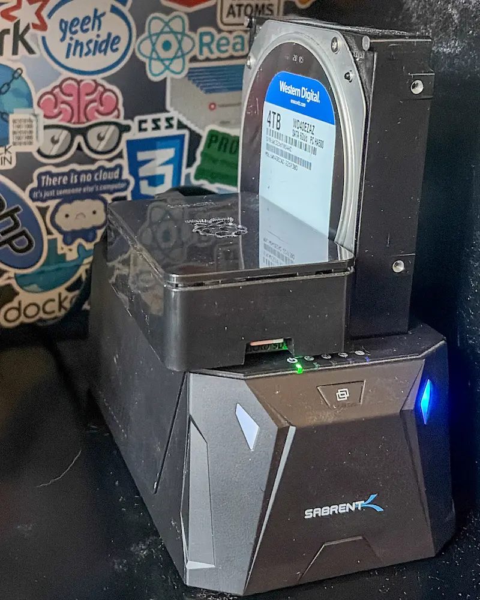

Pick Your Hardware
You don't need a server rack to start. Most first homelabs run on an old laptop, a small mini PC, or a Raspberry Pi with a drive plugged in. Pick the one that fits your budget, your space, and how much noise you can live with.
Tip
Start with what you already have. An old laptop is free, and you can move to something better once you know what you want to run.
Compare starter hardware
Scroll sideways to see every column.
| Hardware | Price range | Power use | Noise | Best for |
|---|---|---|---|---|
| Old laptop | Free if you already own one. Refurbished business laptops run about $240 to $350. | Low | Quiet, with some fan noise under load | Trying things out |
| Mini PC | About $280 to $350 for an Intel N150 model with 16 GB of memory | Low | Quiet | Media and game servers |
| NAS | Raspberry Pi 5 (4 GB) board: $110, plus a case, power supply, and drive. Two-bay NAS boxes: about $340 to $400 before drives. | Low to medium | Drive noise | File storage and backups |
Memory shortages pushed prices up through 2026, so check before you buy. Price sources (outside sites): PCWorld and Notebookcheck for refurbished laptops (spring 2026), ComputingForGeeks for mini PCs (November 2026), Phoronix for the Raspberry Pi (October 2026), and StarryHope for two-bay NAS boxes (October 2026).
What they look like
-

Old laptop tier. Photo by Sven, CC BY 2.0, via Wikimedia Commons. Resized and converted to WebP. -

NAS tier: my Raspberry Pi 4 with a 4 TB drive in a USB dock. Photo by Vincent Rosa.

Older gear works too
A media server or a small game server doesn't need much. If a computer can run a current version of Ubuntu and has a wired network port (or a USB-to-Ethernet adapter), it's enough to start. Plug it into the router with a cable, keep it somewhere with airflow, and leave the lid open on a laptop so it doesn't overheat.
Pick a first project